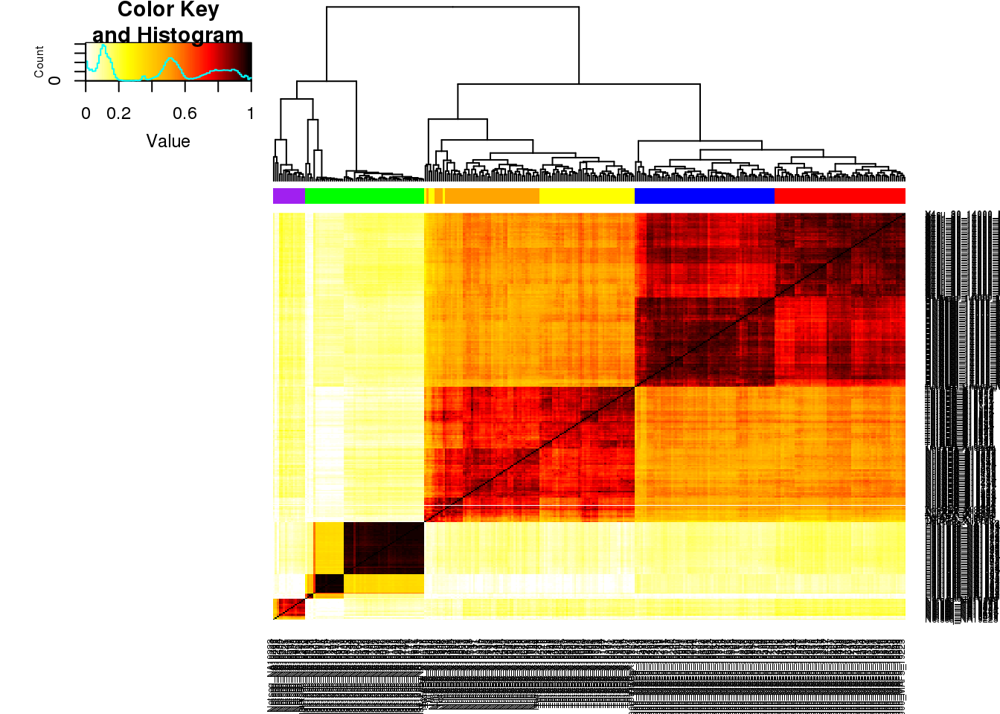
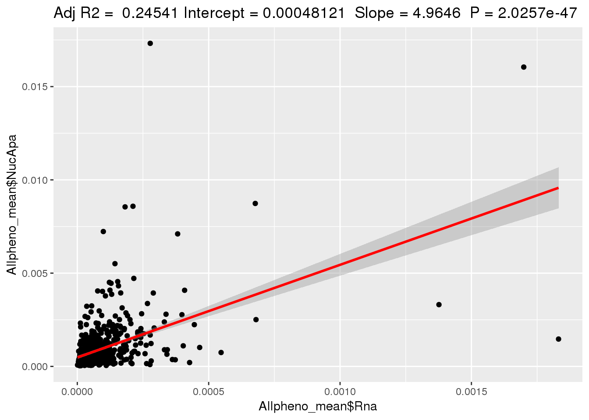
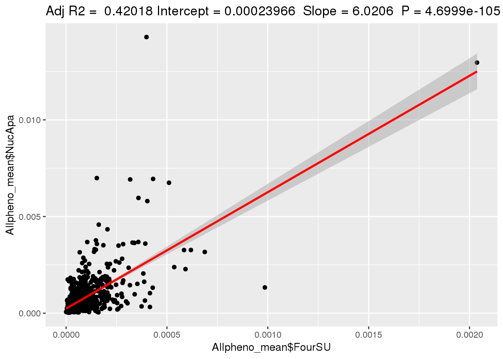
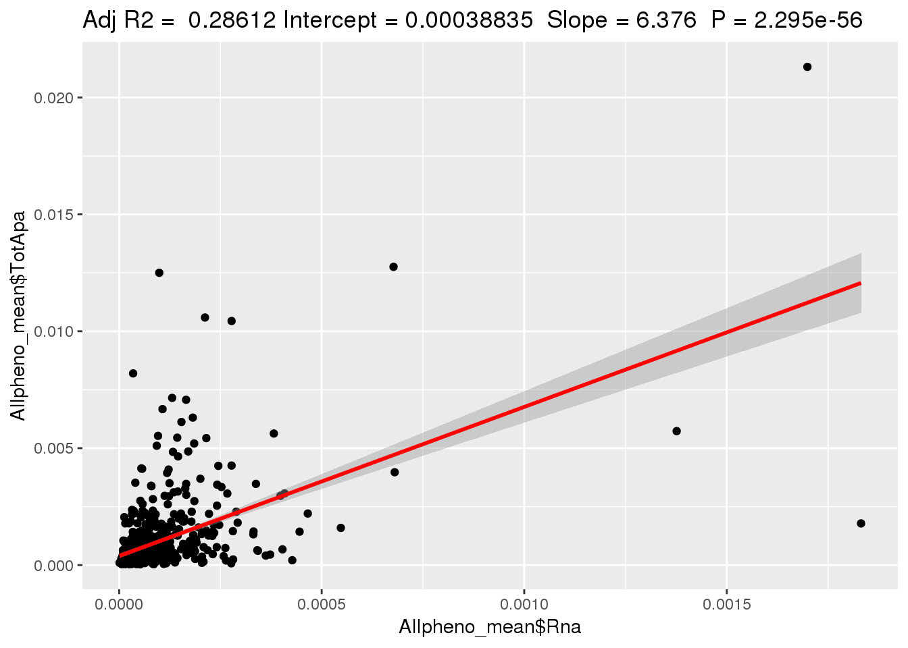
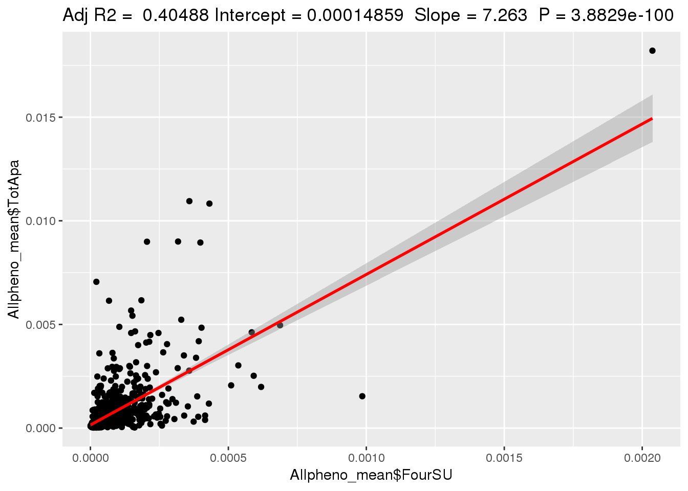
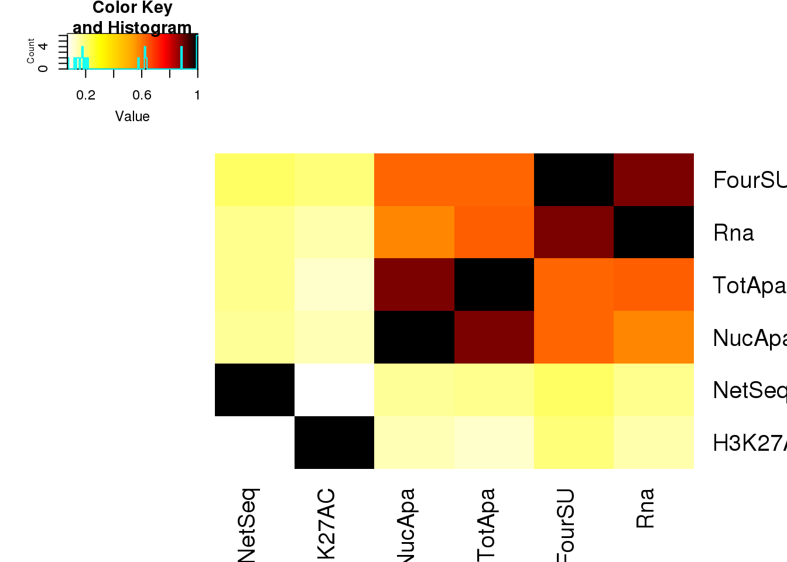
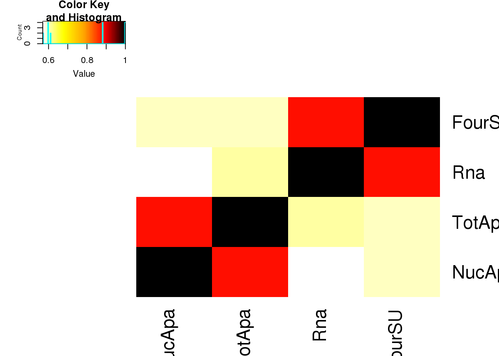

Relationship between RNA, net-seq, h3k27ac
Briana Mittleman
5/15/2019
Last updated: 2019-09-06
Checks: 6 1
Knit directory: apaQTL/analysis/
This reproducible R Markdown analysis was created with workflowr (version 1.4.0). The Checks tab describes the reproducibility checks that were applied when the results were created. The Past versions tab lists the development history.
Great! Since the R Markdown file has been committed to the Git repository, you know the exact version of the code that produced these results.
The global environment had objects present when the code in the R Markdown file was run. These objects can affect the analysis in your R Markdown file in unknown ways. For reproduciblity it’s best to always run the code in an empty environment. Use wflow_publish or wflow_build to ensure that the code is always run in an empty environment.
The following objects were defined in the global environment when these results were created:
| Name | Class | Size |
|---|---|---|
| data | environment | 56 bytes |
| env | environment | 56 bytes |
The command set.seed(20190411) was run prior to running the code in the R Markdown file. Setting a seed ensures that any results that rely on randomness, e.g. subsampling or permutations, are reproducible.
Great job! Recording the operating system, R version, and package versions is critical for reproducibility.
Nice! There were no cached chunks for this analysis, so you can be confident that you successfully produced the results during this run.
Great job! Using relative paths to the files within your workflowr project makes it easier to run your code on other machines.
Great! You are using Git for version control. Tracking code development and connecting the code version to the results is critical for reproducibility. The version displayed above was the version of the Git repository at the time these results were generated.
Note that you need to be careful to ensure that all relevant files for the analysis have been committed to Git prior to generating the results (you can use wflow_publish or wflow_git_commit). workflowr only checks the R Markdown file, but you know if there are other scripts or data files that it depends on. Below is the status of the Git repository when the results were generated:
Ignored files:
Ignored: .DS_Store
Ignored: .Rhistory
Ignored: .Rproj.user/
Ignored: data/.DS_Store
Ignored: docs/.DS_Store
Ignored: docs/figure/.DS_Store
Ignored: output/.DS_Store
Untracked files:
Untracked: .Rprofile
Untracked: ._.DS_Store
Untracked: .gitignore
Untracked: @
Untracked: _workflowr.yml
Untracked: analysis/._PASdescriptiveplots.Rmd
Untracked: analysis/._cuttoffPercUsage.Rmd
Untracked: analysis/APApeak_Phenotype_GeneLocAnno.Nuclear.5perc.fc.gz.qqnorm.allChrom
Untracked: analysis/APApeak_Phenotype_GeneLocAnno.Total.5perc.fc.gz.qqnorm.allChrom
Untracked: analysis/QTLexampleplots.Rmd
Untracked: analysis/cuttoffPercUsage.Rmd
Untracked: analysis/eQTLoverlap.Rmd
Untracked: analysis/interpret verify bam.Rmd
Untracked: analysis/interpret_verifybam.Rmd
Untracked: analysis/mergeRNA.Rmd
Untracked: analysis/oldstuffNotNeeded.Rmd
Untracked: analysis/remove_badlines.Rmd
Untracked: analysis/totalspec.Rmd
Untracked: apaQTL.Rproj
Untracked: code/.NascentRNAdtPlotFirstintronicPAS.sh.swp
Untracked: code/._ApaQTL_nominalNonnorm.sh
Untracked: code/._BothFracDTPlotGeneRegions.sh
Untracked: code/._BothFracDTPlotGeneRegions_normalized.sh
Untracked: code/._EandPqtl_perm.sh
Untracked: code/._EandPqtls.sh
Untracked: code/._FC_NucintornUpandDown.sh
Untracked: code/._FC_UTR.sh
Untracked: code/._FC_intornUpandDownsteamPAS.sh
Untracked: code/._FC_nascentseq.sh
Untracked: code/._FC_newPeaks_olddata.sh
Untracked: code/._HMMpermuteTotal.py
Untracked: code/._HmmPermute.py
Untracked: code/._IntronicPASDT.sh
Untracked: code/._LC_samplegroups.py
Untracked: code/._LD_qtl.sh
Untracked: code/._LD_snpsproxy.sh
Untracked: code/._NascentRNAdtPlot.sh
Untracked: code/._NascentRNAdtPlot3UTRPAS.sh
Untracked: code/._NascentRNAdtPlotExcludeFirstintronicPAS.sh
Untracked: code/._NascentRNAdtPlotNucPAS.sh
Untracked: code/._NascentRNAdtPlotTotPAS.sh
Untracked: code/._NascentRNAdtPlotintronicPAS.sh
Untracked: code/._NascnetRNAdtPlotPAS.sh
Untracked: code/._NetSeq_fourthintronDT.sh
Untracked: code/._NomResfromPASSNP.py
Untracked: code/._NuclearPAS_5per.bed.py
Untracked: code/._PTTfacetboxplots.R
Untracked: code/._PrematureQTLNominal.sh
Untracked: code/._PrematureQTLPermuted.sh
Untracked: code/._QTL2bed.py
Untracked: code/._QTL2bed_withstrand.py
Untracked: code/._RNAbam2bw.sh
Untracked: code/._RNAseqDTplot.sh
Untracked: code/._RunRes2PAS.sh
Untracked: code/._SAF215upbed.py
Untracked: code/._SnakefilePAS
Untracked: code/._SnakefilefiltPAS
Untracked: code/._TESplots100bp.sh
Untracked: code/._TESplots150bp.sh
Untracked: code/._TESplots200bp.sh
Untracked: code/._TotalPAS_5perc.bed.py
Untracked: code/._Untitled
Untracked: code/._ZipandTabPheno.sh
Untracked: code/._aAPAqtl_nominal39ind.sh
Untracked: code/._annotatePacBioPASregion.sh
Untracked: code/._annotatedPAS2bed.py
Untracked: code/._apaInPandE.py
Untracked: code/._apaQTLCorrectPvalMakeQQ.R
Untracked: code/._apaQTLCorrectpval_6or7a.R
Untracked: code/._apaQTL_Nominal.sh
Untracked: code/._apaQTL_nominalv67.sh
Untracked: code/._apaQTL_permuted.sh
Untracked: code/._apaQTL_permuted_test6A7A.sh
Untracked: code/._apainRibo.py
Untracked: code/._assignNucIntonpeak2intronlocs.sh
Untracked: code/._assignTotIntronpeak2intronlocs.sh
Untracked: code/._bam2BW_5primemost.sh
Untracked: code/._bed2saf.py
Untracked: code/._bothFracDTplot1stintron.sh
Untracked: code/._bothFracDTplot4thintron.sh
Untracked: code/._bothFrac_FC.sh
Untracked: code/._callPeaksYL.py
Untracked: code/._changeRibonomQTLres2genename.py
Untracked: code/._changenomQTLres2geneName.py
Untracked: code/._chooseAnno2PAS_pacbio.py
Untracked: code/._chooseAnno2SAF.py
Untracked: code/._chooseSignalSite
Untracked: code/._chooseSignalSite.py
Untracked: code/._closestannotated.sh
Untracked: code/._closestannotated_byfrac.sh
Untracked: code/._cluster.json
Untracked: code/._clusterPAS.json
Untracked: code/._clusterfiltPAS.json
Untracked: code/._codingdms2bed.py
Untracked: code/._config.yaml
Untracked: code/._config2.yaml
Untracked: code/._configOLD.yaml
Untracked: code/._convertNominal2SNPLOC.py
Untracked: code/._convertNominal2SNPloc2Versions.py
Untracked: code/._convertNumeric.py
Untracked: code/._correctNomeqtl.R
Untracked: code/._createPlinkSampfile.py
Untracked: code/._dag.pdf
Untracked: code/._eQTL_switch2snploc.py
Untracked: code/._eQTLgenestestedapa.py
Untracked: code/._encodeRNADTplots.sh
Untracked: code/._extractGenotypes.py
Untracked: code/._extractseqfromqtlfastq.py
Untracked: code/._fc2leafphen.py
Untracked: code/._fc_filteredPAS6and7As.sh
Untracked: code/._fifteenBPupstreamPAS.py
Untracked: code/._fiftyBPupstreamPAS.py
Untracked: code/._filter5perc.R
Untracked: code/._filter5percPheno.py
Untracked: code/._filterLDsnps.py
Untracked: code/._filterMPPAS.py
Untracked: code/._filterMPPAS_15.py
Untracked: code/._filterMPPAS_15_7As.py
Untracked: code/._filterMPPAS_50.py
Untracked: code/._filterSAFforMP.py
Untracked: code/._filterpeaks.py
Untracked: code/._finalPASbed2SAF.py
Untracked: code/._fix4su304corr.py
Untracked: code/._fix4su604corr.py
Untracked: code/._fix4sukalisto.py
Untracked: code/._fixExandUnexeQTL
Untracked: code/._fixExandUnexeQTL.py
Untracked: code/._fixFChead.py
Untracked: code/._fixFChead_bothfrac.py
Untracked: code/._fixFChead_short.py
Untracked: code/._fixH3k12ac.py
Untracked: code/._fixPASregionSNPs.py
Untracked: code/._fixRNAhead4corr.py
Untracked: code/._fixRNAkalisto.py
Untracked: code/._fixgroupedtranscript.py
Untracked: code/._fixhead_netseqfc.py
Untracked: code/._getAPAfromanyeQTL.py
Untracked: code/._getApapval4eqtl.py
Untracked: code/._getApapval4eqtl_unexp.py
Untracked: code/._getApapval4eqtl_version67.py
Untracked: code/._getDownstreamIntronNuclear.py
Untracked: code/._getIntronDownstreamPAS.py
Untracked: code/._getIntronUpstreamPAS.py
Untracked: code/._getQTLalleles.py
Untracked: code/._getQTLfastq.sh
Untracked: code/._getUpstreamIntronNuclear.py
Untracked: code/._grouptranscripts.py
Untracked: code/._intersectVCFandupPAS.sh
Untracked: code/._keep5perMAF.py
Untracked: code/._keepSNP_vcf.sh
Untracked: code/._make5percPeakbed.py
Untracked: code/._makeFileID.py
Untracked: code/._makePheno.py
Untracked: code/._makeSAFbothfrac5perc.py
Untracked: code/._makeSNP2rsidfile.py
Untracked: code/._makeeQTLempirical_unexp.py
Untracked: code/._makeeQTLempiricaldist.py
Untracked: code/._makegencondeTSSfile.py
Untracked: code/._mapSSsnps2PAS.sh
Untracked: code/._mergRNABam.sh
Untracked: code/._mergeAllBam.sh
Untracked: code/._mergeBW_norm.sh
Untracked: code/._mergeBamNascent.sh
Untracked: code/._mergeByFracBam.sh
Untracked: code/._mergePeaks.sh
Untracked: code/._mnase1stintron.sh
Untracked: code/._mnaseDT_fourthintron.sh
Untracked: code/._namePeaks.py
Untracked: code/._netseqDTplot1stIntron.sh
Untracked: code/._netseqFC.sh
Untracked: code/._nucQTLGWAS.py
Untracked: code/._nucSpecQTLineData.py
Untracked: code/._nucSpeceffectsize.py
Untracked: code/._pQTLsotherdata.py
Untracked: code/._pacbioDT.sh
Untracked: code/._pacbioIntronicDT.sh
Untracked: code/._parseBestbamid.py
Untracked: code/._peak2PAS.py
Untracked: code/._peakFC.sh
Untracked: code/._pheno2countonly.R
Untracked: code/._phenoQTLfromlist.py
Untracked: code/._processYRIgen.py
Untracked: code/._pttQTLsinapaQTL.py
Untracked: code/._qtlRegionseq.sh
Untracked: code/._qtlsPvalOppFrac.py
Untracked: code/._quantassign2parsedpeak.py
Untracked: code/._removeXfromHmm.py
Untracked: code/._removeloc_pheno.py
Untracked: code/._riboQTL.sh
Untracked: code/._runCorrectNomEqtl.sh
Untracked: code/._runHMMpermuteAPAqtls.sh
Untracked: code/._runHMMpermuteeQTLS.sh
Untracked: code/._runMakeEmpiricaleQTL_unexp.sh
Untracked: code/._runMakeeQTLempirical.sh
Untracked: code/._run_bam2bw_all3prime.sh
Untracked: code/._run_bam2bw_extra3.sh
Untracked: code/._run_bestbamid.sj
Untracked: code/._run_filtersnpLD.sh
Untracked: code/._run_getAPAfromeQTL_version6.7.sh
Untracked: code/._run_getApaPval4eqtl.sh
Untracked: code/._run_getapafromeQTL.py
Untracked: code/._run_getapafromeQTL.sh
Untracked: code/._run_getapapval4eqtl_unexp.sh
Untracked: code/._run_leafcutterDiffIso.sh
Untracked: code/._run_prxySNP.sh
Untracked: code/._run_pttfacetboxplot.sh
Untracked: code/._run_sepUsagephen.sh
Untracked: code/._run_sepgenobychrom.sh
Untracked: code/._run_verifybam.sh
Untracked: code/._selectNominalPvalues.py
Untracked: code/._sepUsagePhen.py
Untracked: code/._sepgenobychrom.py
Untracked: code/._snakemakePAS.batch
Untracked: code/._snakemakefiltPAS.batch
Untracked: code/._sortindexRNAbam.sh
Untracked: code/._submit-snakemakePAS.sh
Untracked: code/._submit-snakemakefiltPAS.sh
Untracked: code/._subsetAPAnotEorPgene.py
Untracked: code/._subsetAPAnotEorPgene_2versions.py
Untracked: code/._subsetApanoteGene.py
Untracked: code/._subsetApanoteGene_2versions.py
Untracked: code/._subsetUnexplainedeQTLs.py
Untracked: code/._subsetVCF_SS.sh
Untracked: code/._subsetVCF_noSSregions.sh
Untracked: code/._subsetVCF_upstreamPAS.sh
Untracked: code/._subset_diffisopheno.py
Untracked: code/._subsetpermAPAwithGenelist.py
Untracked: code/._subsetpermAPAwithGenelist_2versions.py
Untracked: code/._subsetvcf_otherreg.sh
Untracked: code/._subsetvcf_permSS.sh
Untracked: code/._subtrachfiveprimeUTR.sh
Untracked: code/._subtractExons.sh
Untracked: code/._subtractfiveprimeUTR.sh
Untracked: code/._tabixSNPS.sh
Untracked: code/._tenBPupstreamPAS.py
Untracked: code/._testVerifyBam.sh
Untracked: code/._totSeceffectsize.py
Untracked: code/._twentyBPupstreamPAS.py
Untracked: code/._utrdms2saf.py
Untracked: code/._vcf2bed.py
Untracked: code/._verifyBam18517N.sh
Untracked: code/._verifyBam18517T.sh
Untracked: code/._verifyBam19128N.sh
Untracked: code/._verifyBam19128T.sh
Untracked: code/._wrap_verifybam.sh
Untracked: code/._writePTTexamplecode.py
Untracked: code/._writePTTexamplecode.sh
Untracked: code/.pversion
Untracked: code/.snakemake/
Untracked: code/1
Untracked: code/APAqtl_nominal.err
Untracked: code/APAqtl_nominal.out
Untracked: code/APAqtl_nominal_39.err
Untracked: code/APAqtl_nominal_39.out
Untracked: code/APAqtl_nominal_nonNorm.err
Untracked: code/APAqtl_nominal_nonNorm.out
Untracked: code/APAqtl_nominal_versions67.err
Untracked: code/APAqtl_nominal_versions67.out
Untracked: code/APAqtl_permuted.err
Untracked: code/APAqtl_permuted.out
Untracked: code/APAqtl_permuted_versions67.err
Untracked: code/APAqtl_permuted_versions67.out
Untracked: code/ApaQTL_nominalNonnorm.sh
Untracked: code/BothFracDTPlot1stintron.err
Untracked: code/BothFracDTPlot1stintron.out
Untracked: code/BothFracDTPlot4stintron.err
Untracked: code/BothFracDTPlot4stintron.out
Untracked: code/BothFracDTPlotGeneRegions.err
Untracked: code/BothFracDTPlotGeneRegions.out
Untracked: code/BothFracDTPlotGeneRegions_norm.err
Untracked: code/BothFracDTPlotGeneRegions_norm.out
Untracked: code/BothFracDTPlotGeneRegions_normalized.sh
Untracked: code/DistPAS2Sig.py
Untracked: code/EandPqtl.err
Untracked: code/EandPqtl.out
Untracked: code/EandPqtl_perm.sh
Untracked: code/EandPqtls.sh
Untracked: code/EncodeRNADTPlotGeneRegions.err
Untracked: code/EncodeRNADTPlotGeneRegions.out
Untracked: code/FC_NucintornUpandDown.sh
Untracked: code/FC_NucintronPASupandDown.err
Untracked: code/FC_NucintronPASupandDown.out
Untracked: code/FC_UTR.err
Untracked: code/FC_UTR.out
Untracked: code/FC_UTR.sh
Untracked: code/FC_intornUpandDownsteamPAS.sh
Untracked: code/FC_intronPASupandDown.err
Untracked: code/FC_intronPASupandDown.out
Untracked: code/FC_nascent.err
Untracked: code/FC_nascentout
Untracked: code/FC_nascentseq.sh
Untracked: code/FC_newPAS_olddata.err
Untracked: code/FC_newPAS_olddata.out
Untracked: code/FC_newPeaks_olddata.sh
Untracked: code/HMMpermuteTotal.py
Untracked: code/HmmPermute.p
Untracked: code/HmmPermute.py
Untracked: code/IntronicPASDT.err
Untracked: code/IntronicPASDT.out
Untracked: code/IntronicPASDT.sh
Untracked: code/LC_samplegroups.py
Untracked: code/LD_qtl.sh
Untracked: code/LD_snpsproxy.sh
Untracked: code/LD_vcftools.hap.out
Untracked: code/NascentDTPlotGeneRegions.err
Untracked: code/NascentDTPlotGeneRegions.out
Untracked: code/NascentDTPlotPAS.err
Untracked: code/NascentDTPlotPAS.out
Untracked: code/NascentDTPlotPAS_3utr.err
Untracked: code/NascentDTPlotPAS_3utr.out
Untracked: code/NascentDTPlotPAS_firstintron.err
Untracked: code/NascentDTPlotPAS_firstintron.out
Untracked: code/NascentDTPlotPAS_intron.err
Untracked: code/NascentDTPlotPAS_intron.out
Untracked: code/NascentDTPlotPAS_nuc.err
Untracked: code/NascentDTPlotPAS_nuc.out
Untracked: code/NascentDTPlotPAS_tot.err
Untracked: code/NascentDTPlotPAS_tot.out
Untracked: code/NascentRNAdtPlot.sh
Untracked: code/NascentRNAdtPlot3UTRPAS.sh
Untracked: code/NascentRNAdtPlotExcludeFirstintronicPAS.sh
Untracked: code/NascentRNAdtPlotFirstintronicPAS.sh
Untracked: code/NascentRNAdtPlotNucPAS.sh
Untracked: code/NascentRNAdtPlotTotPAS.sh
Untracked: code/NascentRNAdtPlotintronicPAS.sh
Untracked: code/NascnetRNAdtPlotPAS.sh
Untracked: code/NetSeq_fourthintronDT.sh
Untracked: code/NomResfromPASSNP.py
Untracked: code/NuclearPAS_5per.bed.py
Untracked: code/Nuclear_example.err
Untracked: code/Nuclear_example.out
Untracked: code/PACbioDT.err
Untracked: code/PACbioDT.out
Untracked: code/PACbioDTitronic.err
Untracked: code/PACbioDTitronic.out
Untracked: code/PTTfacetboxplots.R
Untracked: code/PrematureQTLNominal.sh
Untracked: code/PrematureQTLPermuted.sh
Untracked: code/Prematureqtl_nominal.err
Untracked: code/Prematureqtl_nominal.out
Untracked: code/Prematureqtl_permuted.err
Untracked: code/Prematureqtl_permuted.out
Untracked: code/QTL2bed.py
Untracked: code/QTL2bed_withstrand.py
Untracked: code/README.md
Untracked: code/RNABam2BW.err
Untracked: code/RNABam2BW.out
Untracked: code/RNAbam2bw.sh
Untracked: code/RNAseqDTPlotGeneRegions.err
Untracked: code/RNAseqDTPlotGeneRegions.out
Untracked: code/RNAseqDTplot.sh
Untracked: code/Rplots.pdf
Untracked: code/RunRes2PAS.sh
Untracked: code/SAF215upbed.py
Untracked: code/SAF215upbed_gen.py
Untracked: code/Script4NuclearPTTqtlexamples.sh
Untracked: code/Script4NuclearQTLexamples.sh
Untracked: code/Script4TotalPTTqtlexamples.sh
Untracked: code/Script4TotalQTLexamples.sh
Untracked: code/TESplots100bp.err
Untracked: code/TESplots100bp.out
Untracked: code/TESplots100bp.sh
Untracked: code/TESplots150bp.err
Untracked: code/TESplots150bp.out
Untracked: code/TESplots150bp.sh
Untracked: code/TESplots200bp.err
Untracked: code/TESplots200bp.out
Untracked: code/TESplots200bp.sh
Untracked: code/TotalPAS_5perc.bed.py
Untracked: code/Total_example.err
Untracked: code/Total_example.out
Untracked: code/Untitled
Untracked: code/Upstream100Bases_general.py
Untracked: code/YRI_LCL.vcf.gz
Untracked: code/YRI_LCL_chr1.vcf.gz.log
Untracked: code/YRI_LCL_chr1.vcf.gz.recode.vcf
Untracked: code/ZipandTabPheno.sh
Untracked: code/aAPAqtl_nominal39ind.sh
Untracked: code/annotatePacBioPASregion.sh
Untracked: code/annotatedPAS2bed.py
Untracked: code/annotatedPASregion.err
Untracked: code/annotatedPASregion.out
Untracked: code/apaInPandE.py
Untracked: code/apaQTLCorrectPvalMakeQQ_4pc.R
Untracked: code/apaQTLCorrectpval_6or7a.R
Untracked: code/apaQTL_Nominal_4pc.sh
Untracked: code/apaQTL_nominalv67.sh
Untracked: code/apaQTL_permuted.4pc.sh
Untracked: code/apaQTL_permuted_test6A7A.sh
Untracked: code/apafacetboxplots.R
Untracked: code/apainRibo.py
Untracked: code/apaqtlfacetboxplots.R
Untracked: code/assignNucIntonpeak2intronlocs.sh
Untracked: code/assignPeak2Intronicregion.err
Untracked: code/assignPeak2Intronicregion.out
Untracked: code/assignTotIntronpeak2intronlocs.sh
Untracked: code/assigntotPeak2Intronicregion.err
Untracked: code/assigntotPeak2Intronicregion.out
Untracked: code/bam2BW_5primemost.sh
Untracked: code/bam2bw.err
Untracked: code/bam2bw.out
Untracked: code/bam2bw_5primemost.err
Untracked: code/bam2bw_5primemost.out
Untracked: code/binary_fileset.log
Untracked: code/bothFracDTplot1stintron.sh
Untracked: code/bothFracDTplot4thintron.sh
Untracked: code/bothFrac_FC.err
Untracked: code/bothFrac_FC.out
Untracked: code/bothFrac_FC.sh
Untracked: code/callSHscripts.txt
Untracked: code/changePermQTLres2geneName.py
Untracked: code/changeRibonomQTLres2genename.py
Untracked: code/changenomQTLres2geneName.py
Untracked: code/chooseAnno2PAS_pacbio.py
Untracked: code/closestannotated.err
Untracked: code/closestannotated.out
Untracked: code/closestannotated.sh
Untracked: code/closestannotated_byfrac.sh
Untracked: code/closestannotatedbyfrac.err
Untracked: code/closestannotatedbyfrac.out
Untracked: code/codingdms2bed.py
Untracked: code/convertNominal2SNPLOC.py
Untracked: code/convertNominal2SNPloc2Versions.py
Untracked: code/correctNomeqtl.R
Untracked: code/createPlinkSampfile.py
Untracked: code/dag.pdf
Untracked: code/dagPAS.pdf
Untracked: code/dagfiltPAS.pdf
Untracked: code/eQTL_switch2snploc.py
Untracked: code/eQTLgenestestedapa.py
Untracked: code/encodeRNADTplots.sh
Untracked: code/environmentLeaf.yaml
Untracked: code/extractGenotypes.py
Untracked: code/extractseqfromqtlfastq.py
Untracked: code/fc2leafphen.py
Untracked: code/fc_filteredPAS6and7As.sh
Untracked: code/fifteenBPupstreamPAS.py
Untracked: code/fiftyBPupstreamPAS.py
Untracked: code/filterLDsnps.py
Untracked: code/filterMPPAS.py
Untracked: code/filterMPPAS_15.py
Untracked: code/filterMPPAS_15_7As.py
Untracked: code/filterMPPAS_50.py
Untracked: code/filterSAFforMP.py
Untracked: code/filterSAFforMP_gen.py
Untracked: code/finalPASbed2SAF.py
Untracked: code/findbuginpeaks.R
Untracked: code/fix4su304corr.py
Untracked: code/fix4su604corr.py
Untracked: code/fix4sukalisto.py
Untracked: code/fixExandUnexeQTL
Untracked: code/fixExandUnexeQTL.py
Untracked: code/fixFChead_bothfrac.py
Untracked: code/fixFChead_short.py
Untracked: code/fixFChead_summary.py
Untracked: code/fixH3k12ac.py
Untracked: code/fixPASregionSNPs.py
Untracked: code/fixRNAhead4corr.py
Untracked: code/fixRNAkalisto.py
Untracked: code/fixgroupedtranscript.py
Untracked: code/fixhead_netseqfc.py
Untracked: code/genotypesYRI.gen.proc.keep.vcf.log
Untracked: code/genotypesYRI.gen.proc.keep.vcf.recode.vcf
Untracked: code/get100upPAS.py
Untracked: code/getAPAfromanyeQTL.py
Untracked: code/getApapval4eqtl.py
Untracked: code/getApapval4eqtl_unexp.py
Untracked: code/getApapval4eqtl_version67.py
Untracked: code/getDownstreamIntronNuclear.py
Untracked: code/getIntronDownstreamPAS.py
Untracked: code/getIntronUpstreamPAS.py
Untracked: code/getQTLalleles.py
Untracked: code/getQTLfastq.sh
Untracked: code/getSeq100up.sh
Untracked: code/getUpstreamIntronNuclear.py
Untracked: code/getseq100up.err
Untracked: code/getseq100up.out
Untracked: code/grouptranscripts.err
Untracked: code/grouptranscripts.out
Untracked: code/grouptranscripts.py
Untracked: code/intersectPAS_ssSNPS.err
Untracked: code/intersectPAS_ssSNPS.out
Untracked: code/intersectVCFPAS.err
Untracked: code/intersectVCFPAS.out
Untracked: code/intersectVCFandupPAS.sh
Untracked: code/keep5perMAF.py
Untracked: code/keepSNP_vcf.sh
Untracked: code/log/
Untracked: code/makeSAFbothfrac5perc.py
Untracked: code/makeSNP2rsidfile.py
Untracked: code/makeeQTLempirical_unexp.py
Untracked: code/makeeQTLempiricaldist.py
Untracked: code/makegencondeTSSfile.py
Untracked: code/mapSSsnps2PAS.sh
Untracked: code/mergRNABam.sh
Untracked: code/mergeBW_norm.sh
Untracked: code/mergeBWnorm.err
Untracked: code/mergeBWnorm.out
Untracked: code/mergeBamNacent.err
Untracked: code/mergeBamNacent.out
Untracked: code/mergeBamNascent.sh
Untracked: code/mergeRNAbam.err
Untracked: code/mergeRNAbam.out
Untracked: code/mnase1stintron.sh
Untracked: code/mnaseDTPlot1stintron.err
Untracked: code/mnaseDTPlot1stintron.out
Untracked: code/mnaseDTPlot4thintron.err
Untracked: code/mnaseDTPlot4thintron.out
Untracked: code/mnaseDT_fourthintron.sh
Untracked: code/netDTPlot4thintron.out
Untracked: code/netseqDTplot1stIntron.sh
Untracked: code/netseqFC.err
Untracked: code/netseqFC.out
Untracked: code/netseqFC.sh
Untracked: code/neyDTPlot4thintron.err
Untracked: code/nucQTLGWAS.py
Untracked: code/nucQTLGWAS_withLD.py
Untracked: code/nucSpecQTLineData.py
Untracked: code/nucSpeceffectsize.py
Untracked: code/pQTLsotherdata.py
Untracked: code/pacbioDT.sh
Untracked: code/pacbioIntronicDT.sh
Untracked: code/parseBestbamid.py
Untracked: code/phenoQTLfromlist.py
Untracked: code/plink.log
Untracked: code/processYRIgen.py
Untracked: code/prxySNP.err
Untracked: code/prxySNP.out
Untracked: code/pttFacetBoxplots.err
Untracked: code/pttFacetBoxplots.out
Untracked: code/pttQTLsinapaQTL.py
Untracked: code/pullTwoMechData.py
Untracked: code/qtlFacetBoxplots.err
Untracked: code/qtlFacetBoxplots.out
Untracked: code/qtlRegionseq.sh
Untracked: code/qtlsPvalOppFrac.py
Untracked: code/rLD_vcftools.hap.err
Untracked: code/removeXfromHmm.py
Untracked: code/removeloc_pheno.py
Untracked: code/riboQTL.sh
Untracked: code/riboqtl.err
Untracked: code/riboqtl.out
Untracked: code/runBestBamID.err
Untracked: code/runCorrectNomEqtl.sh
Untracked: code/runCorrectNomeqtl.err
Untracked: code/runCorrectNomeqtl.out
Untracked: code/runFilterLD.err
Untracked: code/runFilterLD.out
Untracked: code/runHMMpermute.err
Untracked: code/runHMMpermute.out
Untracked: code/runHMMpermuteAPAqtls.sh
Untracked: code/runHMMpermuteeQTLS.sh
Untracked: code/runHMMpermuteeQTLs.err
Untracked: code/runHMMpermuteeQTLs.out
Untracked: code/runMakeEmpiricaleQTL_unexp.sh
Untracked: code/runMakeEmpiricaleQTLs.err
Untracked: code/runMakeEmpiricaleQTLs.out
Untracked: code/runMakeEmpiricaleQTLsunex.err
Untracked: code/runMakeEmpiricaleQTLsunex.out
Untracked: code/runMakeeQTLempirical.sh
Untracked: code/run_DistPAS2Sig.err
Untracked: code/run_DistPAS2Sig.out
Untracked: code/run_bam2bw.err
Untracked: code/run_bam2bw.out
Untracked: code/run_bam2bw_all3prime.sh
Untracked: code/run_bam2bw_extra3.sh
Untracked: code/run_bam2bwexta.err
Untracked: code/run_bam2bwexta.out
Untracked: code/run_bestbamid.sh
Untracked: code/run_distPAS2Sig.sh
Untracked: code/run_filtersnpLD.sh
Untracked: code/run_getAPAfromanyeQTL.err
Untracked: code/run_getAPAfromanyeQTL.out
Untracked: code/run_getAPAfromeQTL_version6.7.sh
Untracked: code/run_getApaPval4eQTLs.err
Untracked: code/run_getApaPval4eQTLs.out
Untracked: code/run_getApaPval4eQTLsunexplained.err
Untracked: code/run_getApaPval4eQTLsunexplained.out
Untracked: code/run_getApaPval4eqtl.sh
Untracked: code/run_getapafromeQTL.sh
Untracked: code/run_getapapval4eqtl_unexp.sh
Untracked: code/run_leafcutterDiffIso.sh
Untracked: code/run_leafcutter_ds.err
Untracked: code/run_leafcutter_ds.out
Untracked: code/run_prxySNP.sh
Untracked: code/run_pttfacetboxplot.sh
Untracked: code/run_qtlFacetBoxplots.sh
Untracked: code/run_sepUsagephen.sh
Untracked: code/run_sepgenobychrom.err
Untracked: code/run_sepgenobychrom.out
Untracked: code/run_sepgenobychrom.sh
Untracked: code/run_sepusage.err
Untracked: code/run_sepusage.out
Untracked: code/run_verifybam.err
Untracked: code/run_verifybam.out
Untracked: code/run_verifybam.sh
Untracked: code/run_verifybam128N.err
Untracked: code/run_verifybam128N.out
Untracked: code/run_verifybam128T.err
Untracked: code/run_verifybam128T.out
Untracked: code/run_verifybam517N.err
Untracked: code/run_verifybam517N.out
Untracked: code/run_verifybam517T.err
Untracked: code/run_verifybam517T.out
Untracked: code/run_verifybam_fullVCF.sh
Untracked: code/runprxySNP.err
Untracked: code/runprxySNP.out
Untracked: code/runres2pas.err
Untracked: code/runres2pas.out
Untracked: code/selectNominalPvalues.py
Untracked: code/sepUsagePhen.py
Untracked: code/sepgenobychrom.py
Untracked: code/seqQTLfastq.err
Untracked: code/seqQTLfastq.out
Untracked: code/seqQTLregion.err
Untracked: code/seqQTLregion.out
Untracked: code/snakePASlog.out
Untracked: code/snakefiltPASlog.out
Untracked: code/sortindexRNABam.err
Untracked: code/sortindexRNABam.out
Untracked: code/sortindexRNAbam.sh
Untracked: code/subsetAPAnotEorPgene.py
Untracked: code/subsetAPAnotEorPgene_2versions.py
Untracked: code/subsetApanoteGene.py
Untracked: code/subsetApanoteGene_2versions.py
Untracked: code/subsetUnexplainedeQTLs.py
Untracked: code/subsetVCF_SS.sh
Untracked: code/subsetVCF_noSSregions.sh
Untracked: code/subsetVCF_upstreamPAS.sh
Untracked: code/subset_diffisopheno.py
Untracked: code/subsetpermAPAwithGenelist.py
Untracked: code/subsetpermAPAwithGenelist_2versions.py
Untracked: code/subsetvcf_SS.err
Untracked: code/subsetvcf_SS.out
Untracked: code/subsetvcf_noSS.err
Untracked: code/subsetvcf_noSS.out
Untracked: code/subsetvcf_otherreg.sh
Untracked: code/subsetvcf_pas.err
Untracked: code/subsetvcf_pas.out
Untracked: code/subsetvcf_perm.err
Untracked: code/subsetvcf_perm.out
Untracked: code/subsetvcf_permSS.sh
Untracked: code/subsetvcf_rand.err
Untracked: code/subsetvcf_rand.out
Untracked: code/subtract5UTR.err
Untracked: code/subtract5UTR.out
Untracked: code/subtractExons.err
Untracked: code/subtractExons.out
Untracked: code/subtractExons.sh
Untracked: code/subtractfiveprimeUTR.sh
Untracked: code/tabixSNPS.sh
Untracked: code/tabixSNPs.err
Untracked: code/tabixSNPs.out
Untracked: code/tenBPupstreamPAS.py
Untracked: code/testVerifyBam.sh
Untracked: code/test_verifybam.err
Untracked: code/test_verifybam.out
Untracked: code/totSeceffectsize.py
Untracked: code/transcriptdm2bed.py
Untracked: code/twentyBPupstreamPAS.py
Untracked: code/utrdms2saf.py
Untracked: code/vcf2bed.py
Untracked: code/vcf_keepsnps.err
Untracked: code/vcf_keepsnps.out
Untracked: code/verifyBam18517N.sh
Untracked: code/verifyBam18517T.sh
Untracked: code/verifyBam19128N.sh
Untracked: code/verifyBam19128T.sh
Untracked: code/wrap_verifybam.err
Untracked: code/wrap_verifybam.out
Untracked: code/wrap_verifybam.sh
Untracked: code/wrap_verifybam_full.sh
Untracked: code/writeExampleQTLcode.py
Untracked: code/writePTTexamplecode.py
Untracked: code/zipandtabPhen.err
Untracked: code/zipandtabPhen.out
Untracked: data/._.DS_Store
Untracked: data/._MetaDataSequencing.txt
Untracked: data/AnnotatedPAS/
Untracked: data/ApaByEgene/
Untracked: data/ApaByPgene/
Untracked: data/BadLines/
Untracked: data/Battle_pQTL/
Untracked: data/CheckSums/
Untracked: data/CompareOldandNew/
Untracked: data/DTmatrix/
Untracked: data/DiffIso/
Untracked: data/EncodeRNA/
Untracked: data/ExampleQTLPlots/
Untracked: data/FlaggedPAS/
Untracked: data/GWAS_overlap/
Untracked: data/GeuvadisRNA/
Untracked: data/HMMqtls/
Untracked: data/Li_eQTLs/
Untracked: data/NascentRNA/
Untracked: data/NucSpeceQTLeffect/
Untracked: data/PAS/
Untracked: data/PAS_postFlag/
Untracked: data/PolyA_DB/
Untracked: data/PreTerm_pheno/
Untracked: data/PrematureQTLNominal/
Untracked: data/PrematureQTLPermuted/
Untracked: data/QTLGenotypes/
Untracked: data/QTLoverlap/
Untracked: data/QTLoverlap_nonNorm/
Untracked: data/README.md
Untracked: data/RNAseq/
Untracked: data/Reads2UTR/
Untracked: data/SNPinSS/
Untracked: data/SignalSiteFiles/
Untracked: data/TF_motifdisruption/
Untracked: data/ThirtyNineIndQtl_nominal/
Untracked: data/Version15bp6As/
Untracked: data/Version15bp7As/
Untracked: data/apaQTLNominal/
Untracked: data/apaQTLNominal_4pc/
Untracked: data/apaQTLPermuted/
Untracked: data/apaQTLPermuted_4pc/
Untracked: data/apaQTLs/
Untracked: data/assignedPeaks/
Untracked: data/assignedPeaks_15Up/
Untracked: data/bam/
Untracked: data/bam_clean/
Untracked: data/bam_waspfilt/
Untracked: data/bed_10up/
Untracked: data/bed_clean/
Untracked: data/bed_clean_sort/
Untracked: data/bed_waspfilter/
Untracked: data/bedsort_waspfilter/
Untracked: data/bothFrac_FC/
Untracked: data/bw/
Untracked: data/bw_norm/
Untracked: data/eQTLs/
Untracked: data/exampleQTLs/
Untracked: data/fastq/
Untracked: data/filterPeaks/
Untracked: data/fourSU/
Untracked: data/h3k27ac/
Untracked: data/highdiffsiggenes.txt
Untracked: data/inclusivePeaks/
Untracked: data/inclusivePeaks_FC/
Untracked: data/intronRNAratio/
Untracked: data/intron_analysis/
Untracked: data/locusZoom/
Untracked: data/mergedBG/
Untracked: data/mergedBW_byfrac/
Untracked: data/mergedBW_norm/
Untracked: data/mergedBam/
Untracked: data/mergedbyFracBam/
Untracked: data/molPhenos/
Untracked: data/molQTLs/
Untracked: data/motifdistrupt/
Untracked: data/netseq/
Untracked: data/nonNorm_pheno/
Untracked: data/nuc_10up/
Untracked: data/nuc_10upclean/
Untracked: data/oldPASfiles/
Untracked: data/overlapeQTL_try2/
Untracked: data/overlapeQTLs/
Untracked: data/pQTLoverlap/
Untracked: data/pacbio/
Untracked: data/peakCoverage/
Untracked: data/peaks_5perc/
Untracked: data/phenotype/
Untracked: data/phenotype_5perc/
Untracked: data/pttQTL/
Untracked: data/pttQTLplots/
Untracked: data/sigDiffGenes.txt
Untracked: data/sort/
Untracked: data/sort_clean/
Untracked: data/sort_waspfilter/
Untracked: data/twoMech/
Untracked: data/verifyBAM/
Untracked: data/verifyBAM_full/
Untracked: docs/._.DS_Store
Untracked: docs/figure/._.DS_Store
Untracked: nohup.out
Untracked: output/._.DS_Store
Untracked: output/._meanCorrelationPhenotypes.svg
Untracked: output/dtPlots/
Untracked: output/fastqc/
Untracked: output/meanCorrelationPhenotypes.svg
Untracked: run_verifybam517N.err
Untracked: run_verifybam517N.out
Unstaged changes:
Modified: analysis/Readdistagainstfeatures.Rmd
Modified: analysis/overlapapaqtlsandeqtls.Rmd
Modified: analysis/version15bpfilter.Rmd
Modified: code/BothFracDTPlotGeneRegions.sh
Modified: code/Snakefile
Modified: code/SnakefilefiltPAS
Modified: code/apaQTLCorrectPvalMakeQQ.R
Modified: code/apaQTL_Nominal.sh
Modified: code/apaQTL_permuted.sh
Modified: code/apaQTLsnake.err
Modified: code/bam2bw.sh
Modified: code/bed2saf.py
Modified: code/cluster.json
Modified: code/clusterfiltPAS.json
Modified: code/config.yaml
Modified: code/environment.yaml
Modified: code/makePheno.py
Modified: code/mergeAllBam.sh
Modified: code/mergeByFracBam.sh
Modified: code/mergePeaks.sh
Modified: code/peakFC.sh
Modified: code/snakemake.batch
Modified: code/snakemakePAS.batch
Modified: code/snakemakefiltPAS.batch
Modified: code/submit-snakemake.sh
Modified: code/submit-snakemakePAS.sh
Modified: code/submit-snakemakefiltPAS.sh
Deleted: code/test.txt
Modified: data/MetaDataSequencing.txt
Modified: docs/figure/DiffIsoAnalysis.Rmd/figure1Emain-1.pdf
Modified: docs/figure/DiffIsoAnalysis.Rmd/figure1Esubset-1.pdf
Deleted: reads_graphs.Rmd
Note that any generated files, e.g. HTML, png, CSS, etc., are not included in this status report because it is ok for generated content to have uncommitted changes.
These are the previous versions of the R Markdown and HTML files. If you’ve configured a remote Git repository (see ?wflow_git_remote), click on the hyperlinks in the table below to view them.
| File | Version | Author | Date | Message |
|---|---|---|---|---|
| html | 002cb08 | brimittleman | 2019-06-19 | Build site. |
| Rmd | e0acd44 | brimittleman | 2019-06-19 | fix order |
| html | 34dcae7 | brimittleman | 2019-06-13 | Build site. |
| Rmd | cc3b639 | brimittleman | 2019-06-13 | fix bug |
| html | 9958fb1 | brimittleman | 2019-05-16 | Build site. |
| Rmd | ae6ed8b | brimittleman | 2019-05-16 | scatter plot pas |
| html | 5557709 | brimittleman | 2019-05-16 | Build site. |
| Rmd | e32bef6 | brimittleman | 2019-05-16 | add mean corr |
| html | cb158b3 | brimittleman | 2019-05-15 | Build site. |
| Rmd | 700e9da | brimittleman | 2019-05-15 | switch rna data |
| html | 35b1f6e | brimittleman | 2019-05-15 | Build site. |
| Rmd | 90e0c4d | brimittleman | 2019-05-15 | add reg heatmap |
In this analysis I want to look at the correlation between the net seq daata, rna seq, 4su, and h3k27ac to understand the relationship between nascent transcription and steady state RNA. This will be similar to the analysis in Li et al 2016 figure 1c.
library(tidyverse)── Attaching packages ────────────────────────────────────────────────────────────────────────────────────── tidyverse 1.2.1 ──✔ ggplot2 3.1.1 ✔ purrr 0.3.2
✔ tibble 2.1.1 ✔ dplyr 0.8.0.1
✔ tidyr 0.8.3 ✔ stringr 1.3.1
✔ readr 1.3.1 ✔ forcats 0.3.0 ── Conflicts ───────────────────────────────────────────────────────────────────────────────────────── tidyverse_conflicts() ──
✖ dplyr::filter() masks stats::filter()
✖ dplyr::lag() masks stats::lag()library(gplots)
Attaching package: 'gplots'The following object is masked from 'package:stats':
lowesslibrary(gdata)gdata: read.xls support for 'XLS' (Excel 97-2004) files ENABLED.gdata: Unable to load perl libaries needed by read.xls()
gdata: to support 'XLSX' (Excel 2007+) files.gdata: Run the function 'installXLSXsupport()'
gdata: to automatically download and install the perl
gdata: libaries needed to support Excel XLS and XLSX formats.
Attaching package: 'gdata'The following objects are masked from 'package:dplyr':
combine, first, lastThe following object is masked from 'package:purrr':
keepThe following object is masked from 'package:stats':
nobsThe following object is masked from 'package:utils':
object.sizeThe following object is masked from 'package:base':
startsWithlibrary(reshape2)
Attaching package: 'reshape2'The following object is masked from 'package:tidyr':
smithslibrary(workflowr)This is workflowr version 1.4.0
Run ?workflowr for help getting startedH3K27ac at TSS
h3k27ac=read.table("../data/h3k27ac/H3K27acShyam_TSS_fixed.txt", header = T,stringsAsFactors = F)%>% dplyr::select(-Chr, -Start, -End,-Strand, -Length) %>% dplyr::rename("ID"= Geneid)RNA seq
RNA=read.table("../data/fourSU/tr_decay_table_norm.txt", header=T, stringsAsFactors = F)%>% dplyr::select(gene_id,contains("RNAseq_14000")) %>% dplyr::rename("ID"=gene_id)I also have the kalisto TPM that I can try:
RNA_TPM=read.table('../data/RNAseq/kallisto_RNAseq.txt', stringsAsFactors = F,header = T) %>% dplyr::rename("ID"=gene)4su
fourSU=read.table("../data/fourSU/tr_decay_table_norm.txt", header=T, stringsAsFactors = F)%>% dplyr::select(gene_id,contains("4su_30")) %>% dplyr::rename("ID"=gene_id)tpm 4su
foursu_tpm=read.table("../data/fourSU/kallisto_4sU.txt", header = T, stringsAsFactors = F) %>% dplyr::rename("ID"=gene)Netseq
I want to quantify reads 1kb on either side of the TSS. I will use the gencode v19 annotations to match the files above. I need to convert the gtf file into an saf file with the TSS.
python makegencondeTSSfile.pyRun feature counts with the 16 net seq libraries and this TSS file.
sbatch netseqFC.shFix header
python fixFChead_bothfrac.py ../data/netseq/netseq_TSS.fc ../data/netseq/netseq_TSS.fixed.fcnetseq=read.table("../data/netseq/netseq_TSS.fixed.fc", stringsAsFactors = F, header = T) %>% dplyr::select(-Chr, -Strand, -Start, -Length, -End) %>% dplyr::rename("ID"=Geneid)Total:
Genes to include:
sig_genes=read.table(file="../data/highdiffsiggenes.txt",col.names = "GeneName")I will have to change the gene names for the 3’ info:
geneNames=read.table("../../genome_anotation_data/ensemble_to_genename.txt", sep="\t", col.names = c('geneid', 'GeneName', 'source' ),stringsAsFactors = F) %>% dplyr::select(-source)peaknumlist=read.table("../data/peaks_5perc/APApeak_Peaks_GeneLocAnno.5perc.bed", stringsAsFactors = F, header=F, col.names = c("chr", "start","end", "id", "score", "strand")) %>% separate(id, into=c("peaknum", "geneid"), sep=":") %>% mutate(peakid=paste("peak", peaknum,sep=""))
TotAPA=read.table("../data/peakCoverage/APAPeaks.ALLChrom.Filtered.Named.GeneLocAnnoPARSED.Total.Quant.Fixed.fc", stringsAsFactors = F, header = T) %>% dplyr::select(-Chr, -Start, -End, -Strand, -Length) %>% separate(Geneid, into=c("peakid","chrom", "start", "end", "strand", "geneID"),sep=":") %>% separate(geneID,into=c("GeneName", "loc"),sep="_") %>% inner_join(sig_genes, by="GeneName")%>% dplyr::semi_join(peaknumlist, by="peakid") %>% dplyr::select(-chrom , -start, -end, -strand, -loc)Warning: Expected 2 pieces. Additional pieces discarded in 3 rows [12630,
12631, 12632].Warning: Column `GeneName` joining character vector and factor, coercing
into character vectorTotApaMelt=melt(TotAPA, id.vars =c( "peakid", "GeneName"), value.name="count", variable.name="Ind") %>% separate(Ind, into=c('Individual', 'fraction') ,sep="_")%>% dplyr::select(peakid, GeneName, Individual, count) %>% inner_join(geneNames,by="GeneName") %>% group_by(Individual,geneid) %>% summarize(TotApa=sum(count)) %>% ungroup() %>% dplyr::rename("ID"=geneid) %>% mutate(Individual=paste("TotAPA_", Individual, sep=""))
##spread
totApaSpread= spread(TotApaMelt, Individual,TotApa)Nuclear
NucAPA=read.table("../data/peakCoverage/APAPeaks.ALLChrom.Filtered.Named.GeneLocAnnoPARSED.Nuclear.Quant.Fixed.fc", stringsAsFactors = F, header = T) %>% dplyr::select(-Chr, -Start, -End, -Strand, -Length) %>% separate(Geneid, into=c("peakid","chrom", "start", "end", "strand", "geneID"),sep=":") %>% separate(geneID,into=c("GeneName", "loc"),sep="_") %>% inner_join(sig_genes, by="GeneName")%>% dplyr::semi_join(peaknumlist, by="peakid") %>% dplyr::select(-chrom , -start, -end, -strand, -loc)Warning: Expected 2 pieces. Additional pieces discarded in 3 rows [12630,
12631, 12632].Warning: Column `GeneName` joining character vector and factor, coercing
into character vectorNucApaMelt=melt(NucAPA, id.vars =c( "peakid", "GeneName"), value.name="count", variable.name="Ind") %>% separate(Ind, into=c('Individual', 'fraction') ,sep="_")%>% dplyr::select(peakid, GeneName, Individual, count) %>% inner_join(geneNames,by="GeneName") %>% group_by(Individual,geneid) %>% summarize(NucApa=sum(count)) %>% ungroup() %>% dplyr::rename("ID"=geneid) %>% mutate(Individual=paste("NucAPA_", Individual, sep=""))
##spread
nucApaSpread= spread(NucApaMelt, Individual,NucApa)Correlation:
I will join all of these based on the genes we have data for in all.
#4su, h3k27, RNA, netseq, nuc, total
allpheno=fourSU %>% dplyr::inner_join(h3k27ac, by="ID") %>% dplyr::inner_join(RNA, by="ID") %>% dplyr::inner_join(netseq, by="ID") %>% dplyr::inner_join(nucApaSpread, by="ID") %>% dplyr::inner_join(totApaSpread, by="ID") allpheno_matrix= as.matrix(allpheno %>% dplyr::select(-ID))my_palette <- colorRampPalette(c("white", "yellow", "orange", "red", "black"))(n = 100)
allphenocorr= abs(round(cor(allpheno_matrix,method="spearman"),2))
##4su-red, h3k27-green, RNA-blue, netseq-purple, nuc-orange, total-yellow
colBar=c(rep("Red",65), rep("Green", 59), rep("Blue",69), rep("Purple", 16),rep("Orange", 52),rep("Yellow", 52))
heatmap.2(as.matrix(allphenocorr),trace="none", dendrogram='col',ColSideColors=colBar, col=my_palette)
Pairwise graphs averaging accross indviduals:
First I will take the mean for all individuals for each phenotype:
h3k27ac_mean=melt(h3k27ac,id.vars = "ID") %>% group_by(variable) %>% mutate(sumInd=sum(value)) %>% ungroup() %>% mutate(normVal=value/sumInd) %>% group_by(ID) %>% summarize(H3K27AC=mean(normVal))%>% filter(H3K27AC!=0)
RNA_mean=melt(RNA,id.vars = "ID") %>% group_by(ID) %>% summarize(Rna=mean(value)) %>% filter(Rna!=0)
foursu_mean= melt(fourSU,id.vars = "ID") %>% group_by(variable) %>% mutate(sumInd=sum(value)) %>% ungroup() %>% mutate(normVal=value/sumInd) %>% group_by(ID) %>% summarize(FourSU=mean(normVal))%>% filter(FourSU!=0)
netseq_mean= melt(netseq,id.vars = "ID") %>% group_by(variable) %>% mutate(sumInd=sum(value)) %>% ungroup() %>% mutate(normVal=value/sumInd) %>% group_by(ID) %>% summarize(NetSeq=mean(normVal))%>% filter(NetSeq!=0)
totapa_mean= melt(totApaSpread,id.vars = "ID") %>% group_by(variable) %>% mutate(sumInd=sum(value)) %>% ungroup() %>% mutate(normVal=value/sumInd) %>% group_by(ID) %>% summarize(TotApa=mean(normVal))%>% filter(TotApa!=0)
nucapa_mean= melt(nucApaSpread,id.vars = "ID") %>% group_by(variable) %>% mutate(sumInd=sum(value)) %>% ungroup() %>% mutate(normVal=value/sumInd) %>% group_by(ID) %>% summarize(NucApa=mean(normVal))%>% filter(NucApa!=0)Join all of these:
Allpheno_mean= h3k27ac_mean %>% inner_join(RNA_mean,by="ID") %>% inner_join(foursu_mean, by="ID") %>% inner_join(netseq_mean, by="ID") %>% inner_join(totapa_mean, by="ID") %>%inner_join(nucapa_mean, by="ID")ggplotRegression <- function (fit) {
require(ggplot2)
ggplot(fit$model, aes_string(x = names(fit$model)[2], y = names(fit$model)[1])) +
geom_point() +
stat_smooth(method = "lm", col = "red") +
labs(title = paste("Adj R2 = ",signif(summary(fit)$adj.r.squared, 5),
"Intercept =",signif(fit$coef[[1]],5 ),
" Slope =",signif(fit$coef[[2]], 5),
" P =",signif(summary(fit)$coef[2,4], 5)))
}Plots:
ggplotRegression(lm(log10(Allpheno_mean$NetSeq)~ log10(Allpheno_mean$Rna)))
ggplotRegression(lm(log10(Allpheno_mean$FourSU)~ log10(Allpheno_mean$Rna)))
ggplotRegression(lm(log10(Allpheno_mean$H3K27AC)~ log10(Allpheno_mean$Rna)))
ggplotRegression(lm(log10(Allpheno_mean$H3K27AC)~ log10(Allpheno_mean$NetSeq)))
ggplotRegression(lm(log10(Allpheno_mean$H3K27AC)~ log10(Allpheno_mean$FourSU)))
ggplotRegression(lm(log10(Allpheno_mean$FourSU)~ log10(Allpheno_mean$NetSeq)))
ggplotRegression(lm(log10(Allpheno_mean$Rna)~ log10(Allpheno_mean$NetSeq)))
ggplotRegression(lm(log10(Allpheno_mean$H3K27AC)~ log10(Allpheno_mean$NetSeq)))
ggplotRegression(lm(log10(Allpheno_mean$H3K27AC)~ log10(Allpheno_mean$TotApa)))
ggplotRegression(lm(log10(Allpheno_mean$H3K27AC)~ log10(Allpheno_mean$NucApa)))
ggplotRegression(lm(Allpheno_mean$NucApa~ Allpheno_mean$Rna))
ggplotRegression(lm(Allpheno_mean$NucApa~ Allpheno_mean$FourSU))
| Version | Author | Date |
|---|---|---|
| 002cb08 | brimittleman | 2019-06-19 |
ggplotRegression(lm(Allpheno_mean$TotApa~ Allpheno_mean$Rna))
| Version | Author | Date |
|---|---|---|
| 002cb08 | brimittleman | 2019-06-19 |
ggplotRegression(lm(Allpheno_mean$TotApa~ Allpheno_mean$FourSU))
| Version | Author | Date |
|---|---|---|
| 002cb08 | brimittleman | 2019-06-19 |
heatmap correlation for these:
Allpheno_mean_mat= as.matrix(Allpheno_mean %>% dplyr::select(-ID))
Allpheno_mean_matcorr= abs(round(cor(Allpheno_mean_mat,method="spearman"),2))
Allpheno_mean_matcorrOrder=as.data.frame(Allpheno_mean_matcorr) %>% select(NetSeq, H3K27AC,NucApa,TotApa,FourSU,Rna)
heatmap.2(as.matrix(Allpheno_mean_matcorrOrder),trace="none",dendrogram = "none", col=my_palette,Colv = F)
| Version | Author | Date |
|---|---|---|
| 002cb08 | brimittleman | 2019-06-19 |
Allpheno_mean_matcorrOrder NetSeq H3K27AC NucApa TotApa FourSU Rna
H3K27AC 0.04 1.00 0.13 0.10 0.17 0.13
Rna 0.16 0.13 0.57 0.61 0.88 1.00
FourSU 0.19 0.17 0.60 0.60 1.00 0.88
NetSeq 1.00 0.04 0.14 0.16 0.19 0.16
TotApa 0.16 0.10 0.88 1.00 0.60 0.61
NucApa 0.14 0.13 1.00 0.88 0.60 0.57remove net and k27ac
Allpheno_mean_small=as.matrix(Allpheno_mean %>% dplyr::select(-ID,-H3K27AC,-NetSeq))
Allpheno_meanSM_matcorr= abs(round(cor(Allpheno_mean_small,method="spearman"),2))
heatmap.2(as.matrix(Allpheno_meanSM_matcorr),trace="none", col=my_palette, ,dendrogram = "none")
| Version | Author | Date |
|---|---|---|
| 002cb08 | brimittleman | 2019-06-19 |
sessionInfo()R version 3.5.1 (2018-07-02)
Platform: x86_64-pc-linux-gnu (64-bit)
Running under: Scientific Linux 7.4 (Nitrogen)
Matrix products: default
BLAS/LAPACK: /software/openblas-0.2.19-el7-x86_64/lib/libopenblas_haswellp-r0.2.19.so
locale:
[1] LC_CTYPE=en_US.UTF-8 LC_NUMERIC=C
[3] LC_TIME=en_US.UTF-8 LC_COLLATE=en_US.UTF-8
[5] LC_MONETARY=en_US.UTF-8 LC_MESSAGES=en_US.UTF-8
[7] LC_PAPER=en_US.UTF-8 LC_NAME=C
[9] LC_ADDRESS=C LC_TELEPHONE=C
[11] LC_MEASUREMENT=en_US.UTF-8 LC_IDENTIFICATION=C
attached base packages:
[1] stats graphics grDevices utils datasets methods base
other attached packages:
[1] workflowr_1.4.0 reshape2_1.4.3 gdata_2.18.0 gplots_3.0.1
[5] forcats_0.3.0 stringr_1.3.1 dplyr_0.8.0.1 purrr_0.3.2
[9] readr_1.3.1 tidyr_0.8.3 tibble_2.1.1 ggplot2_3.1.1
[13] tidyverse_1.2.1
loaded via a namespace (and not attached):
[1] gtools_3.8.1 tidyselect_0.2.5 haven_1.1.2
[4] lattice_0.20-38 colorspace_1.3-2 generics_0.0.2
[7] htmltools_0.3.6 yaml_2.2.0 rlang_0.4.0
[10] pillar_1.3.1 glue_1.3.0 withr_2.1.2
[13] modelr_0.1.2 readxl_1.1.0 plyr_1.8.4
[16] munsell_0.5.0 gtable_0.2.0 cellranger_1.1.0
[19] rvest_0.3.2 caTools_1.17.1.1 evaluate_0.12
[22] labeling_0.3 knitr_1.20 highr_0.7
[25] broom_0.5.1 Rcpp_1.0.0 KernSmooth_2.23-15
[28] scales_1.0.0 backports_1.1.2 jsonlite_1.6
[31] fs_1.3.1 hms_0.4.2 digest_0.6.18
[34] stringi_1.2.4 grid_3.5.1 rprojroot_1.3-2
[37] cli_1.1.0 tools_3.5.1 bitops_1.0-6
[40] magrittr_1.5 lazyeval_0.2.1 crayon_1.3.4
[43] whisker_0.3-2 pkgconfig_2.0.2 xml2_1.2.0
[46] lubridate_1.7.4 assertthat_0.2.0 rmarkdown_1.10
[49] httr_1.3.1 rstudioapi_0.10 R6_2.3.0
[52] nlme_3.1-137 git2r_0.25.2 compiler_3.5.1